ERAS
- Pre-debut (2010-2013)
- School Trilogy Era (2013-2014)
- Youth Trilogy Era (2015-2016)
- Wings Era (2016-2017)
- Love Yourself Era (2017-2019)
- Map of the Soul Era (2019-2020)
- Be Era (2020-2021)
- Butter & Permission to Dance Era (2020-2021)
- Proof Era (2022)
Pre-debut Antes de su debut oficial en 2013, BTS (Bangtan Sonyeondan) fue formado como un grupo de hip-hop por Big Hit Entertainment. La formación de BTS comenzó en 2010, con la firma de RM (Kim Nam-joon) después de ser escuchado rapeando por el CEO de Big Hit, Bang Si-hyuk. En 2012, la alineación final se consolidó, incluyendo a Jin, Jimin, V y Jungkook.


es la primera era de la banda en coreano y japonés, que comenzó con su sencillo debut "2 Cool 4 Skool" el 12 de junio de 2013 y terminó con el video musical de "Danger (Mo-Blue-Mix) (Feat. Thanh)" el 20 de noviembre de 2014.
Esta era se caracteriza por temas de juventud, sueños, felicidad y amor, incluyendo el concepto de música oscura, rap prominente y letras que desafían las normas. La trilogía incluye los álbumes "2 Cool 4 Skool", "Skool Luv Affair" y "Dark & Wild".


Youth Trilogy explora el concepto de "juventud a la deriva" y "the most beautiful moment in life" (화양연화 o 花様年華, también conocido como hwa yang yeon hwa o HYYH).
Al comienzo de la adultez temprana, la belleza coexiste con la incertidumbre. Sin embargo, a pesar de la inseguridad, estos jóvenes siguen adelante.


En la era Wings BTS continúa sus historias de juventud y crecimiento, comenzando con canciones sobre chicos que enfrentan la tentación por primera vez y experimentan un conflicto.
El capítulo concluye con un mensaje de consuelo y esperanza para los jóvenes que sufren en su generación.


En la era Love Yourself explora el amor como una narrativa de transición a la adultez y como un mensaje de paz y unidad para la sociedad.
El grupo expresa diferentes facetas del amor, desde los momentos emocionantes del primer amor, hasta el amor falso que lleva a la pérdida, y finalmente, el mensaje de que el amor propio es el amor verdadero.


En la era Map of the Soul narra su camino hacia el descubrimiento de su yo real y completo. En esta serie, el grupo canta sobre aceptar tanto el yo que quiero mostrar al mundo como la sombra interior que quiero despreciar.


En la era Be BTS expresa sus sentimientos encontrados sobre la sensación de impotencia en el mundo, desde el miedo y la ansiedad mezclados con la determinación de superarlos y brindar alegría a la comunidad global.


En la era Be BTS aporta energía positiva y brillante para mejorar el estado de ánimo y hacer que la gente baile.
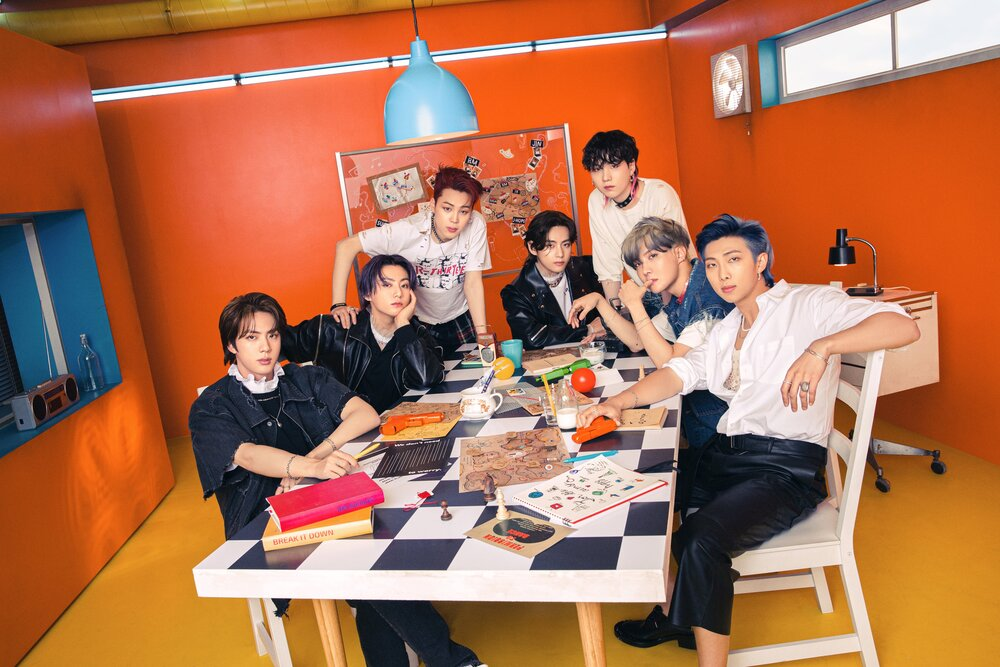 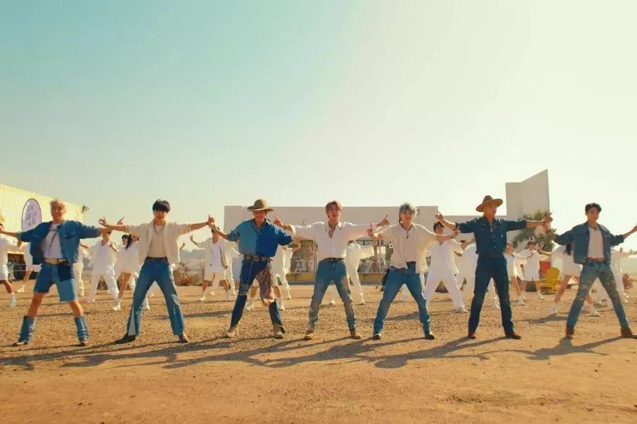 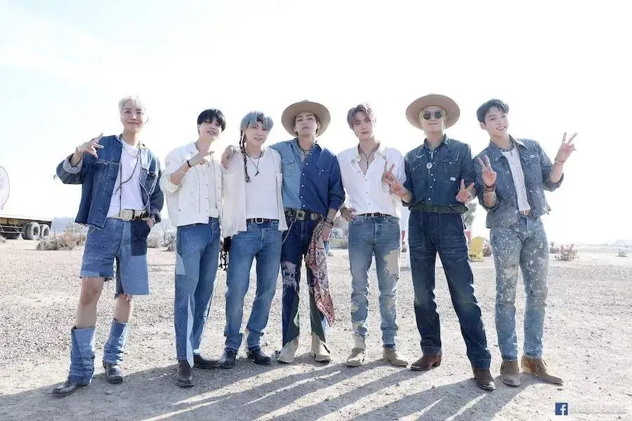 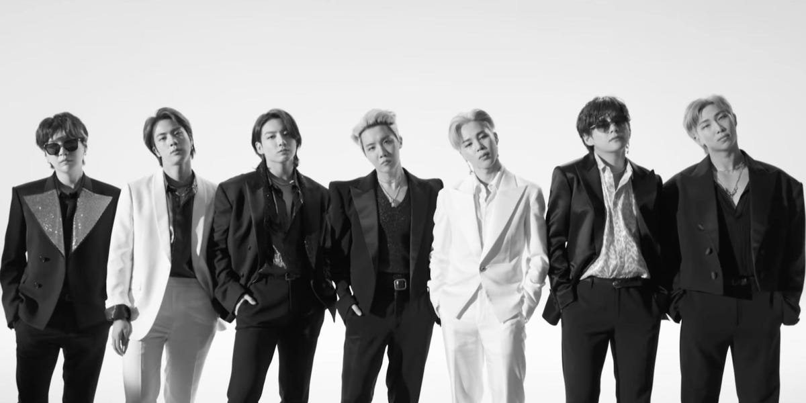En la era Proof BTS expresa sus sentimientos encontrados sobre la sensación de impotencia en el mundo, desde el miedo y la ansiedad mezclados con la determinación de superarlos y brindar alegría a la comunidad global.


 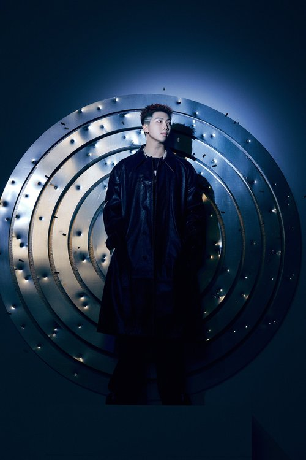
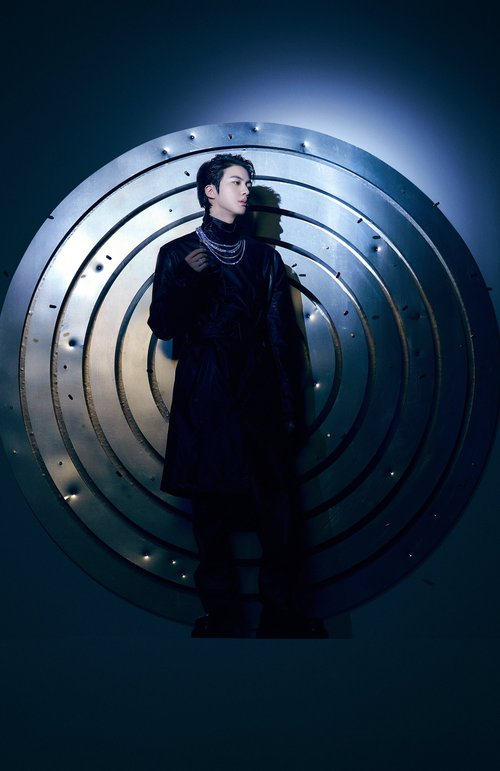
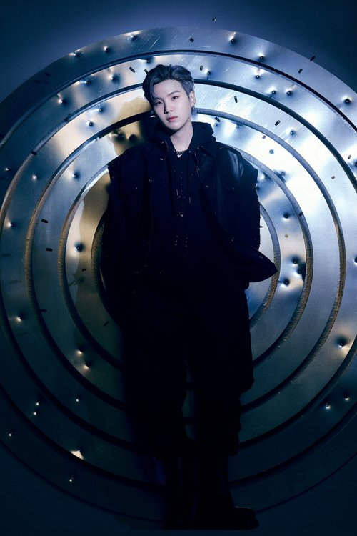
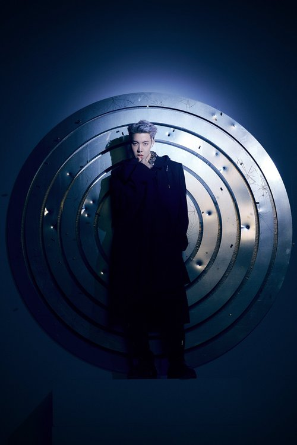
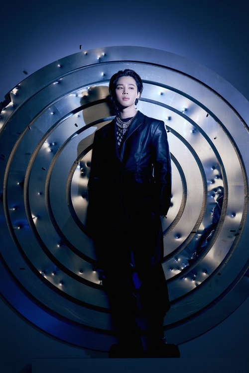
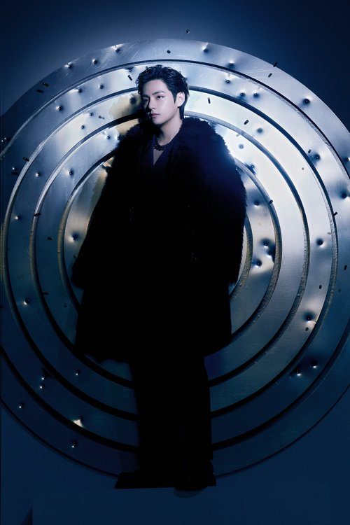
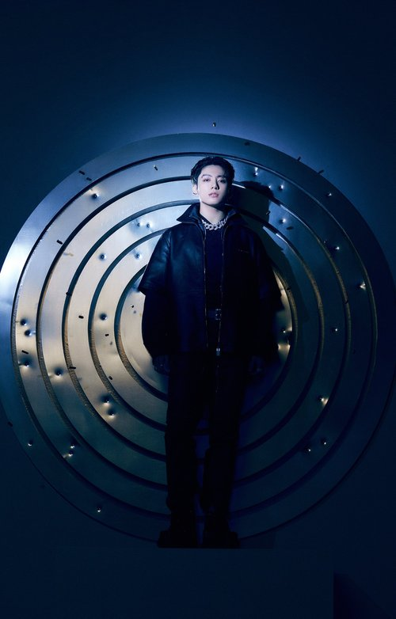
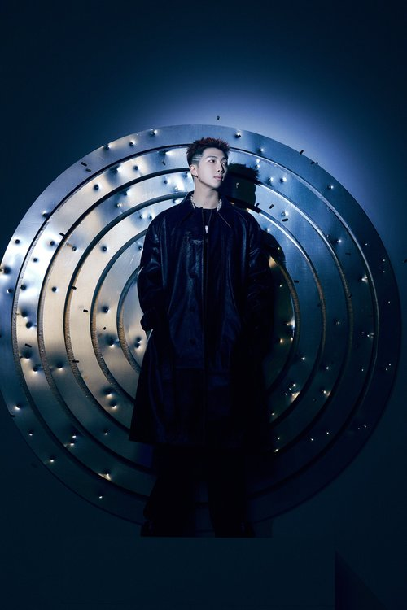
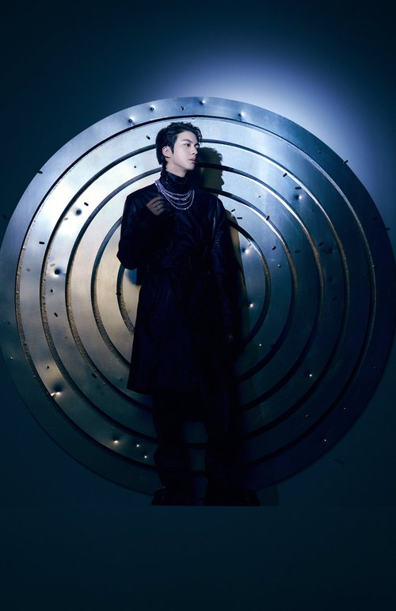
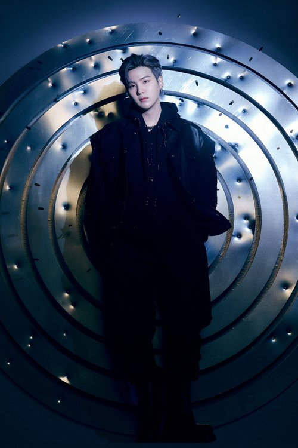
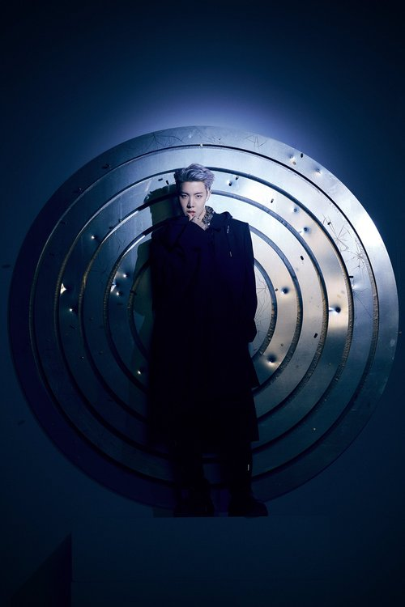
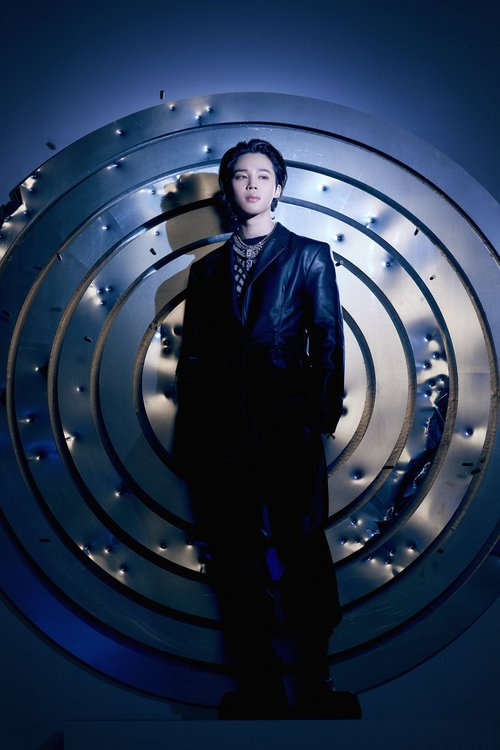
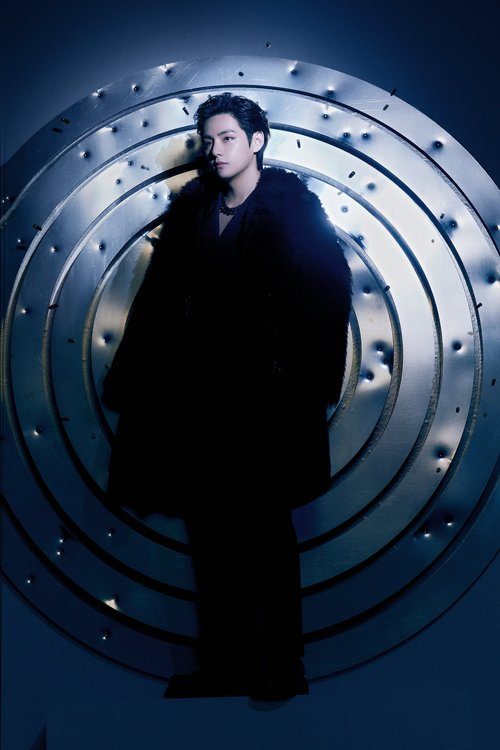
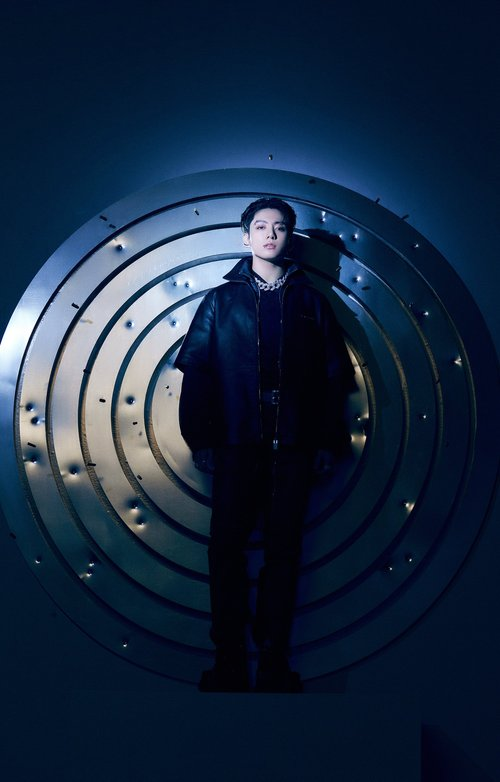
🏠